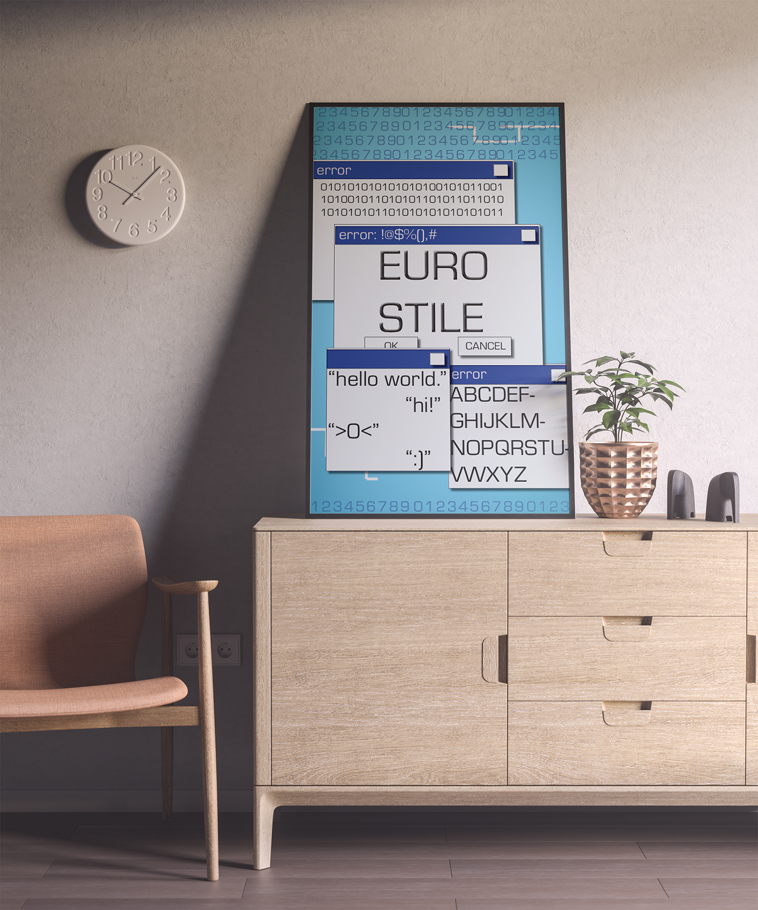
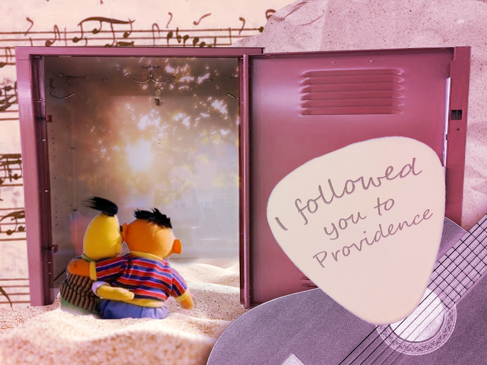

Eurostile Font Poster

This font-based poster mockup was my first finished project utilizing Adobe InDesign and Photoshop. With design comes the need to understand the connotations that come with certain images, shapes, colors, and ... fonts. Eurostile evokes connections to the future through its sleek san-serif design. However, it also brings to mind the beginnings of tech and the internet. This juxtaposition is what inspired me to create this futuristic yet nostalgic poster.
"To Providence" Collage

This photo-bashed collage was created as an homage to one of my fondest memories. The guitar class storage room was a sanctuary during my otherwise tumultuous adolescence. I'm brought back to the smell of dusty instruments and the sound of dissonant guitar plucking by middle schoolers. However, the fondest memories I have are filled with recollections of my time with my best friend. This dream-like collage is testament to that time.